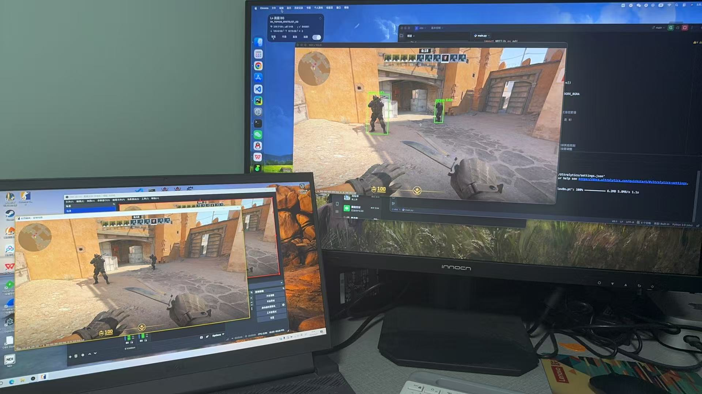
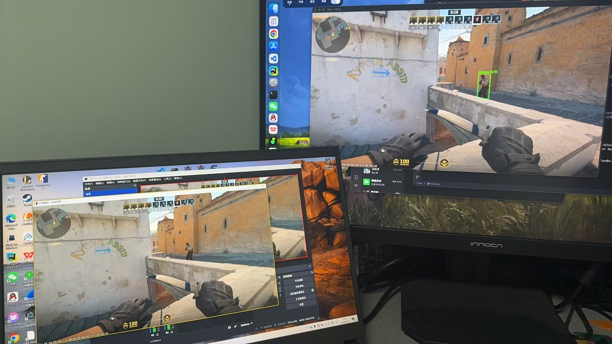

OBS 吸附外挂原理分析——NDI + YOLOv8 实现画面捕捉与目标锁定
背景
近期出现了一类被称为 “OBS 吸附” 的游戏外挂方案。与传统外挂通过注入游戏进程、Hook DirectX/OpenGL 来获取画面不同，这类外挂的取景手段极为特殊——它利用 OBS（Open Broadcaster Software） 的 NDI 输出功能获取游戏画面，再用 YOLOv8 目标检测模型识别屏幕中的敌人位置，最终驱动鼠标”吸附”到目标身上，实现自瞄效果。
本文从技术原理角度拆解这一方案，还原其核心链路，旨在帮助理解此类外挂的运作方式，为反作弊研究提供参考。
为什么用 OBS？
传统屏幕捕获方式（如 BitBlt、DXGI Screen Capture）在多数反作弊系统中已有特征标记。而 OBS 本身是合法的直播软件，拥有广泛的驱动白名单和数字签名，其 NDI 输出通道不会触发常规的反作弊检测。
| 取景方式 | 被检测风险 | 延迟 | 说明 |
|---|---|---|---|
| 进程注入 Hook | ⚠️ 极高 | 极低 | 主流反作弊重点盯防 |
| DXGI/DirectX 截屏 | ⚠️ 高 | 低 | 行为特征已被部分反作弊收录 |
| BitBlt GDI 截屏 | ⚠️ 中 | 中 | 部分反作弊检测 GDI 调用链 |
| OBS NDI 输出 | ✅ 低 | 低 | 合法软件行为，难以区分 |
整体链路
1 | |
实现效果


核心实现
1. 通过 NDI 获取游戏画面
NDI 是 NewTek 开发的低延迟视频 over IP 协议。OBS 安装 NDI 插件后可将采集的画面以 NDI 流形式推送到局域网。外挂端只需作为 NDI 接收方拿取画面即可：
1 | |
关键细节：
find_wait_for_sources超时 2000ms，防止扫描不到源时卡死。- 颜色格式
BGRX_BGRA→ 4 通道 BGRA，匹配 OpenCV 的数据布局，后续需要cvtColor转为 3 通道 BGR 送模型推理。
2. YOLOv8 人体检测
本文仅为测试，直接用 COCO 预训练的 YOLOv8：
1 | |
为什么选 yolov8n？ 外挂场景对帧率极度敏感——每多 10ms 延迟意味着少一次瞄准更新。nano 版本仅 6.5MB，在普通 GPU 上单帧推理约 5-10ms，是实时自瞄的唯一可行选择。
| 模型 | 推理耗时 (GPU) | 自瞄可用性 |
|---|---|---|
| yolov8n | ~5-10ms | ✅ 流畅 |
| yolov8s | ~10-20ms | ⚠️ 可接受 |
| yolov8m+ | >30ms | ❌ 延迟过高 |
3. 目标坐标提取
检测结果中每个 box 都包含目标的边界框坐标 (x1, y1, x2, y2)——这就是吸附锁敌的核心数据。外挂通常会取置信度最高的目标或离准星最近的目标作为锁敌对象：
1 | |
参数调优是反检测的关键：
conf=0.4— 置信度阈值需要根据游戏画面精细调节。过低会增加误检（把地图装饰识别为人），过高则漏检率高。classes=[0]— 严格限定只检测person。如果不过滤，YOLO 还会检测鼠标、键盘、杯子等无意义的 79 个类别，徒增开销。verbose=False— 减少不必要的终端输出，降低 CPU 占用痕迹。
4. 主循环——持续取帧与推理
1 | |
资源管理要点：
- 每帧必须调用
recv_free_video_v2释放 NDI 内部缓冲区，否则数分钟内内存就会撑爆。 - 退出时严格按
recv → find → ndi顺序销毁，逆序可能导致悬挂指针。
鼠标吸附——从检测框到准星落点
检测出目标坐标后，剩下的关键一步是将像素坐标转化为鼠标移动指令，驱动准星”吸附”到目标身上。下面逐步拆解这一环节的完整实现。
1. 坐标映射——画面像素 → 屏幕坐标
YOLO 返回的 (x1, y1, x2, y2) 是相对于 NDI 视频帧的像素坐标，而鼠标操作的是屏幕绝对坐标系。两者之间需要一次映射变换：
1 | |
这里
FRAME_W/FRAME_H是 NDI 视频帧的实际宽高（从video_frame.xres/video_frame.yres获取）。
实际场景中需要注意： 如果 OBS 采集的画面经过了裁剪/缩放（例如游戏是 1920×1080 但 OBS 输出 1280×720），映射比例需要以 NDI 帧的实际分辨率为准，而非游戏的渲染分辨率。
2. 目标筛选——多个检测结果中锁谁？
一帧画面中可能检测到多个目标（多名敌人）。外挂需要一套策略从中选出唯一锁敌对象。以下是三种常见算法：
策略 A：离准星最近（FOV 优先）
最符合直觉的策略——锁离屏幕中心（准星）最近的目标，模拟人类”先看到最近的威胁”：
1 | |
策略 B：最高置信度优先
1 | |
策略 C：加权综合评分（实战最常用）
单独使用距离或置信度都有缺陷——距离最近的可能只是一个误检，置信度最高的可能在视野边缘。加权评分可以兼顾两者：
1 | |
锁敌策略还需要加入防抖逻辑——如果当前已经锁定了某个目标，不应在每一帧之间来回切换目标（会显得极其不自然）。实现上通常给当前目标加一个”惯性”偏置：
1 | |
3. 鼠标移动——三种驱动方式
获取目标屏幕坐标后，需要让鼠标”移过去”。Windows 下有三种主流方式，按隐蔽性递增：
方式 1：SendInput（用户态 API，最常见）
1 | |
方式 2：mouse_event（老旧 API，但仍可用）
1 | |
方式 3：KMDF/UMDF 驱动（内核级，隐蔽性最高）
通过自定义鼠标过滤驱动直接向鼠标设备栈注入输入报告，绕过 SendInput 的调用链标记。这种方式技术门槛最高，但也是最难被反作弊检测到的。
1 | |
| 方式 | 隐蔽性 | 实现难度 | 被检测风险 |
|---|---|---|---|
SendInput |
低 | 简单 | 调用链可被 Hook 追踪 |
mouse_event |
低 | 简单 | API 已被标记，行为特征明显 |
| 驱动注入 | 高 | 复杂 | 需签名驱动，但仍可能被行为分析捕获 |
4. 平滑算法——让吸附看起来”像人”
如果每帧直接 move_mouse_absolute(target_x, target_y)——准星瞬间跳到敌人头上，行为特征极其明显，大多数反作弊系统都有针对瞬移式鼠标的检测规则。
平滑移动的核心思路：将一次长距离移动拆分成多段小步长，逐步逼近目标。
线性插值（Lerp）——最基础的平滑
1 | |
缓动函数——模拟人类加减速
人类操作鼠标时不会匀速移动——启动慢、中间快、接近目标时减速微调。这对应缓动函数中的 ease-in-out：
1 | |
贝塞尔曲线——最接近人类手部轨迹
人类手腕移动鼠标时，轨迹通常是一条微弧线而非严格直线。贝塞尔曲线可以模拟这种自然弯曲：
1 | |
噪点注入——反行为特征分析
即使使用了贝塞尔曲线 + 缓动函数，如果每帧的轨迹参数完全一致，仍然可以被统计模型识别。加入随机扰动是关键：
1 | |
5. 完整吸附主循环
将以上模块整合到主循环中，形成从”取帧 → 检测 → 选目标 → 鼠标平滑移动”的完整链路：
1 | |
6. 吸附参数汇总
完整的吸附模块涉及多个可调参数，每个都直接影响”像人程度”和被检测风险：
| 参数 | 推荐值 | 作用 | 调高后果 | 调低后果 |
|---|---|---|---|---|
AIM_FOV_RADIUS |
200-400px | 锁敌触发范围 | 锁到视野边缘目标，行为不自然 | 贴脸才锁，实用性下降 |
steps（平滑步数） |
8-16 | 移动分段数 | 移动太慢，目标已走远 | 轨迹太”硬”，像机器 |
step_delay |
1-5ms | 步间延迟 | 移动太慢 | 移动太快，无人类反应痕迹 |
SWITCH_THRESHOLD |
0.15 | 目标切换惯性 | 死锁一个目标不放 | 来回跳锁，极其可疑 |
offset_range |
±3px | 落点随机偏移 | 锁到目标外的背景 | 次次锁同一像素，特征明显 |
conf（置信度） |
0.4-0.6 | 检测阈值 | 漏检多——敌人打不到 | 误检多——对着空气锁 |
反作弊视角
理解此类外挂的运作方式有助于制定对应的检测策略：
| 检测维度 | 可能的手段 |
|---|---|
| NDI 流量特征 | 监控本地 NDI 收发——普通用户极少在游戏同时使用 NDI |
| 桌面 OBS | 检测游戏运行时 OBS 是否开启了 NDI 输出 |
| 行为分析 | “吸附”操作产生的鼠标轨迹模式与人类输入有统计差异 |
| 进程链 | YOLO/PyTorch/OpenCV 等 ML 运行时与游戏进程同时存在 |
| 性能痕迹 | 持续的 GPU 推理负载会在显卡功耗/频率曲线中留下特征 |
文件结构
1 | |
环境
1 | |
另需安装 NDI SDK，并将 NDIlib Python 绑定置于可导入路径。
总结
“OBS 吸附”外挂巧妙地利用了 OBS + NDI 这一合法软件组合绕过了常规的截屏检测——反作弊系统难以区分”用户在直播”还是”外挂在取景”。配合 YOLOv8 nano 的轻量推理能力，在 5-10ms 内即可完成一帧的目标检测与坐标提取，为后续的自瞄模块提供高精度定位数据。
这类方案的检测难点在于：整个链路上的每一个组件单独看都是合法的——OBS 是直播软件、NDI 是视频传输协议、YOLO 是开源视觉模型。真正的突破口在于组合行为的异常性：正常用户不会在 FPS 游戏中同时运行 NDI 接收端 + PyTorch 推理。行为链分析或许是未来反作弊的一个重要方向。